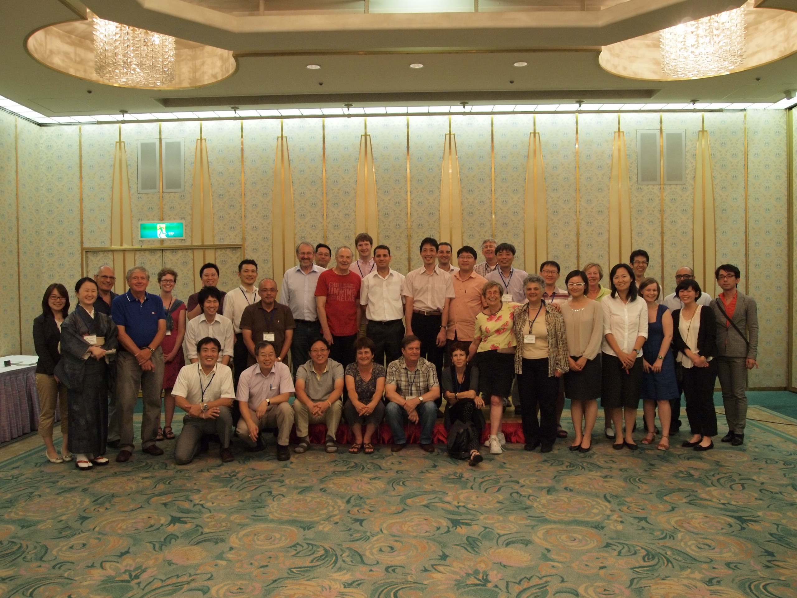

IGU Commission on the Sustainability of Rural Systems
Home
Objectives and Research Tasks
Our History
Steering Committee
Past Colloquia
Reports and Publications
Photo Gallery
In Memoriam
Contact and Links
Gallery: 21st Colloquium, Japan, 2013

back to galleries list